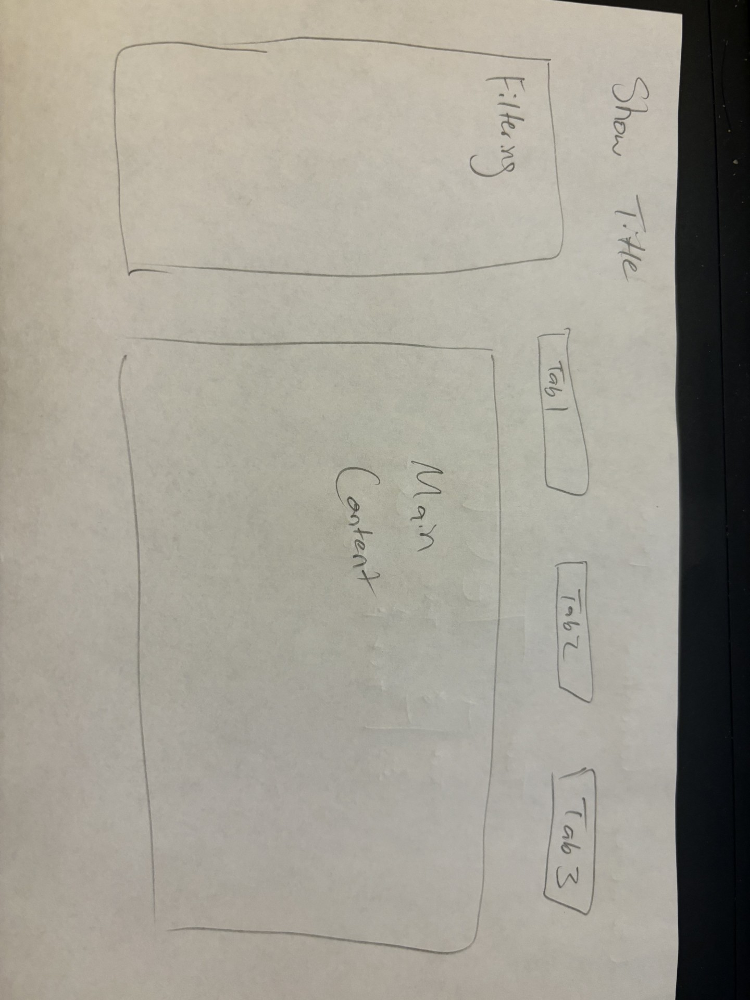
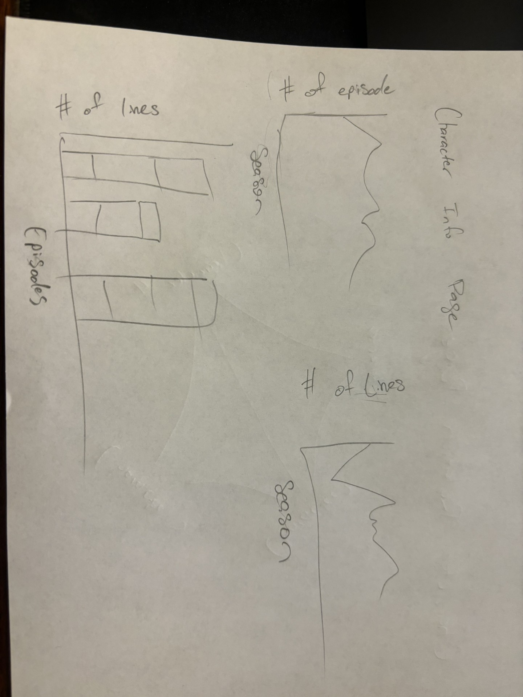
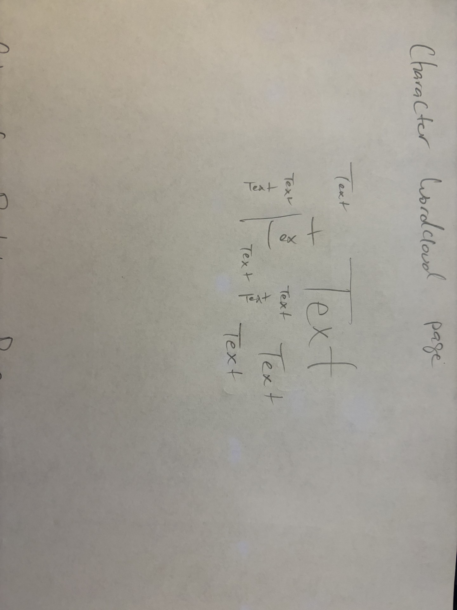
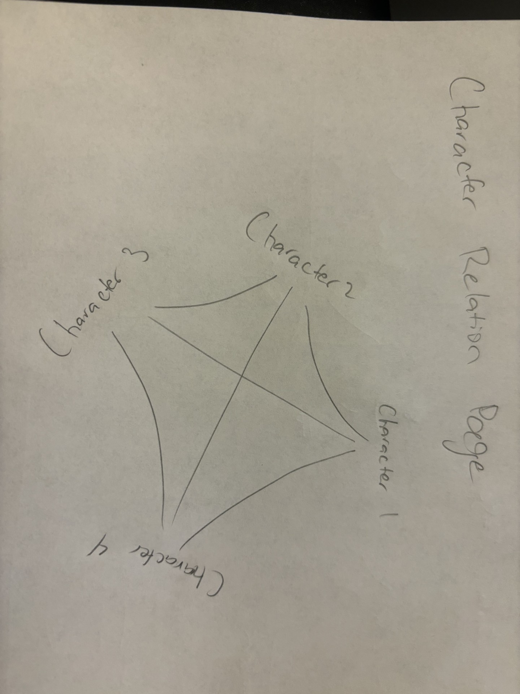
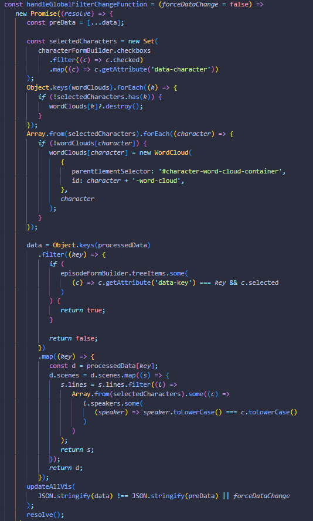
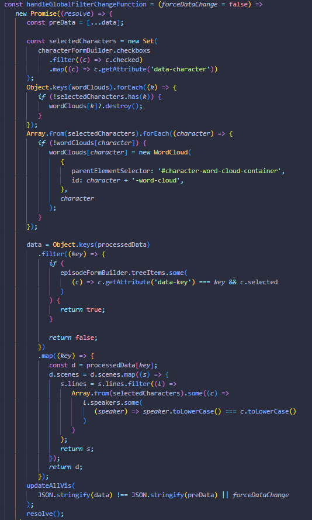

Project 3 -
By Devin Harris, Alex Yang, and Kody Penn
The data for this project was scraped from https://www.livesinabox.com/friends/scripts.shtml . We did this using a javascript library called Puppeteer. We opted to go this route for a few reasons. First the transcripts text files we found online had some inconsistencies between certain episodes making the parsing process a bit difficult. There were also not any options we found that had clear delimiters for where episode titles were so knowing when a episode was over was hard to distinguish. We also thought using puppeteer would be a good chance to enchance our js skills and explore the realm of web scraping which is very closely related to data visualization.
The code for this scrapper can be found in the /js/scrapper.js file. Within this file you will see we first navigate to the livesinabox site and find all the links to all the episodes transcripts. Once we do this we go to each of those links and download the full html content of the page (depending on the downloadHtmlFiles global boolean). We should only need to do this once, since once we have a local copy we can flip the downloadHtmlFiles flag to false and use our local copy to parse from. This prevents unneeded load on the source site while we tested the parser. Once we had the local files we loop over each one and parse out the html content for every scene and every line within that scene. We also store who said the line. Once we have a big array build with all the scenes per episode and all the lines per scene we do another postprocessing loop to convert all the lines to the better list of speakers. This is important because many lines in the transcripts were said by "All" or "Everybody" or "Joey (mimicking Rachel)". Without extra processing to convert this to a list of all speakers involved or parsing out extra context of how the speaker is saying the line, these would be treated as separate characters which muddy up the line associations and character selectors.
There were also some inconsistencies within the latter episodes which we tried to write special handling logic for within our parser. This did not work perfectly as we only have 229 total episodes parsed out from this site which there should be 236. There may also be some strange lines were parsing stop prematuraly due to strange characters found denoting a new scene or something of that nature, but given more time we could have worked out these kinks and build a better data parser.
Once all this processing was done we saved a local transcripts.json file that our visualization pulls from to build the various charts, character/episode selectors, etc...
The episodes selector allows the user to select specific episodes and/or seasons to pull data from. By default all episodes and seasons are selected. It uses the shoelace tree component to allow nesting each episode under each season in a very easy to navigate way. It also shows a total selected episodes count in the top right where if you hover over it you can see the number of episodes selected per season. If all the episodes in a season are selected the count will show as a green tag otherwise a gray one. Checking any box from this selector will update all the charts on the right hand side to only pull lines, scenes, etc... from those episodes.
The characters selector allows the user to select specific characters to pull data from. By default all the main characters (the 6 with the most overall lines) are selected. All non main characters are put into a separate detail section to prevent left side from getting a bunch of unnessary scroll. You can also search for specific characters within this detail section to make sifting through that list a bit easier. The "Other Characters" list is also sorted by number of lines so Mike is the character with the next most amount of lines after Phoebe. It also shows a total selected characters count in the top right where if you hover over it you can see the number of main characters and other characters selected as well. Checking any box from this selector will update the chord and wordclouds charts on the right hand side to only pull lines, scenes, etc... from those characters.

...
Each character selected from the character selection sidebar will have a word cloud generated on the Character Wordclouds tab. Each wordcloud will be populated with the top 100 most said words by each character from the seasons/episodes selected. Hovering each word in the wordcloud will give a tooltip of the word itself as well as the word count.
The chord charts display character relationships. There are two chord charts, one for scene relationships and the other for episode relationships. Simply put, we count the number of scenes/episodes every character selected share within the episode selections and show the strength of the relationships over those domains with the chord ribbons. There are also tooltips on these charts so hovering over a specific ribbon will show you the number of scenes/episodes the characters connected with said ribbon share. You can also hover over the individual character arcs to see how many total scenes/episodes the character is in.
Below, we have the general layout sketch of our application. Here we have the show title on the top right corner, a sidenav for a filtering selection, tabs for each page component, and finally an area for the page component to be
Below, we have the page content for character information. On this page, we will use graphs to show how frequent each character appears in the show through the number of appearances in episodes across the various seasons and the number of lines each character has.
Below, we have a sketch of the wordcloud. Each character will have a generated wordcloud with their top 100 most said words.
Below, we have a chord graph to show the relations between characters based on the number of shared scenes and episodes each character has with one another signified thorugh connecting lines between the characters.
For libraries we used d3js, d3-cloud, puppeteer, and shoelace. d3 was mainly used in building the chord and line charts. d3-cloud was specifically for generating the word cloud. Puppeteer was used for our web scraping purposes. It is highlight in more detail in the data section of this documentation. Shoelace was an interesting webcomponent based library for building our control and layout menus. It gave us some more interesting UI elements to work with and made it easier to select certain subselections of episodes/characters and change the size of the viewable graphs.

First our main function collects all the data from the csv, processes said data, then initializes all the charts and event listeners.

The processData function loops over all the rawData from the json file and does some places it into a map like structure. This will make it easier to find certain episodes later without having to loop through a big array.

The eventListeners in this case are for when the split panel is repositioned or the tab group selection is changed. This ensures the charts stay responsive to the containing view resizing and show the most accurate data possible between tab changes.

We also had a globals file that stored all global variables that would be shared across different chart types. These variables include the rawData from the json, the processedData which is the rawData with in a faster map structure, then the actual data which is the filtered down version of the processedData based on character/episode selections.

We also had global variables for all the chart instances. This makes it easier to access any chart from anywhere in the code and makes it especially easy to trigger updateVis method from other chart interactions.
 

Finally, there were also a few helper functions defined globally. The main two of note are the updateAllVis and handleGlobalFilterChange. These functions handle calling the updateVis/updateData on all the charts, and applying new filtering logic to the processedData to send to the chart instances on some character/episode selections change. Another interesting concept is debouncing the handleGlobalFilterChange. Because all the charts call this, making sure frequent potentially duplicated calls dont trigger unessecary processing, a debounce was implemented to basically wait 50ms after a call to this method is made and if no new call is made in that time it does the processing. You can also see special logic for the word clouds were done since we have a wordcloud instance per character selected and destroying an instance for a character that was unselected or creating a new instance for a character that was selected was necessary.
Of course there are lots of more interesting areas, such as the chart implementations themselves, how the chord graph builds its relationship matrix, how the line graphs are constructed but I will leave that for you to investigate in our sourcecode!
You can access the source code here and run it simply in VSCode with the live preview extension on the index.html file. You can also see the live version here.
Devin Harris: Web Scrapper, Site Layout (Episodes/Character Selectors), Chord Graphs
Kody Penn:
Alex Yang: Character WordClouds